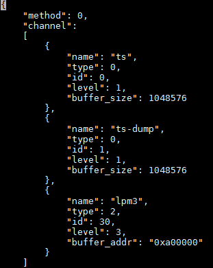

Log Configuration
This topic describes how to set the log levels, log output paths, log file names, and log file size.
slog.conf
The /etc/slog.conf file controls the logs collected by Slog. Figure 1 shows an example.
Figure 1 Configuration example

Table 1 describes the configuration parameters.
Table 1 Configuration items
Item
|
Description
|
|---|
Global_level
|
slog log level. The levels on the device and host side are set separately.
- 0: DEBUG
- 1: INFO
- 2: WARNING
- 3: ERROR
|
MaxNodeSize
|
Size of the shared memory (SHM) node. The maximum value is 524272 bytes.
|
MaxQueueCount
|
Number of shared memory (SHM) nodes
|
LogAgentMaxFileNum
|
Number of files stored in the /var/dlog directory on the host side. If the number of stored files is greater than this value, the new log file overwrites the earliest one.
This parameter is invalid on the device side.
|
logAgentMaxFileSize
|
Maximum size of a log file. If the size of a log file exceeds this value, a new log file is generated. The default value is 10 MB. You can change the value as required. The maximum value is 100 MB.
This parameter is invalid on the device side.
|
logAgentFileDir
|
Log file path
This parameter is invalid on the device side.
|
daemon_socket_port
|
Port number for sending logs to the IDE (Mind Studio).
This parameter is invalid on the device side.
|
dlog.conf
The /etc/dlog.conf file controls the logs collected by Dlog. Figure 2 shows an example.
Figure 2 Configuration example

Table 2 describes the configuration parameters.
Table 2 Configuration items
Item
|
Description
|
|---|
Method
|
Obtaining mode. This parameter is reserved.
|
Channel
|
Channel. Four types of channels are available
|
Name
|
Default channel name, which cannot be configured
|
Type
|
Channel type, which cannot be configured
|
id
|
Channel module ID, including id_max and id_min, which cannot be configured
|
Level
|
Log level of the channel
|
Buffer_size
|
Buffer size
|
Buffer_addr
|
Buffer address, which cannot be configured
|